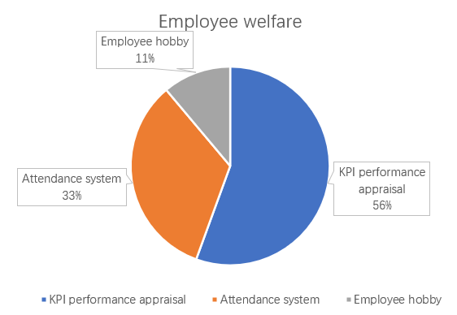

①According to the questionnaire survey, the company mainly uses Windows system. They hope to be improved in customer management and provide better service for customers.
②Most employees like to use KPI performance appraisal and give employees benefits according to their hobbies.
③The company would like more people to see ads for its products.